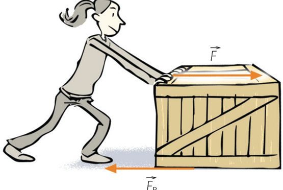
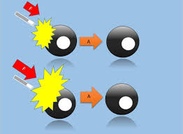
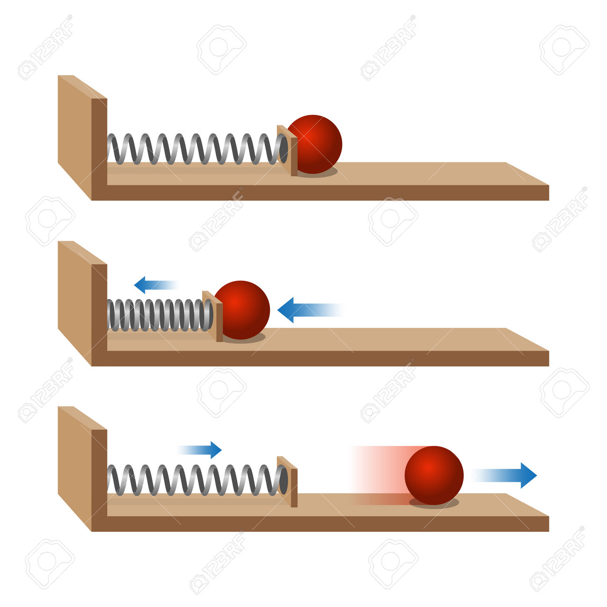

Los principios fundamentales de Isaac Newton

Todo cuerpo permanece en reposo o movimiento uniforme a menos que una fuerza actúe sobre él.

La aceleración de un objeto es proporcional a la fuerza neta aplicada e inversamente a su masa.

A toda acción corresponde una reacción igual pero en sentido contrario.
Hewitt, P. G. (2016). Física conceptual. Pearson Educación.